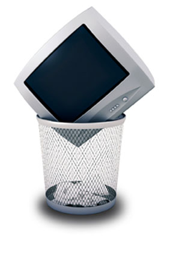

Feb. 17, 2009, will be a significant day in television history. That’s the day TV stations will no longer broadcast analog signals. This will allow public safety communications to use that part of the spectrum, but your old TV may no longer work with digital signals - unless you have a converter box (go here to get a coupon to use toward purchasing a converter box). Many old televisions may be thrown out because of the conversion.
Keeping your old set until it gives out is a good green choice, but if you decide to purchase a new one, the best option is to recycle the old TV, which can be complicated. Many old TVs contain a considerable amount of lead, so recycling them is not always a simple or eco-friendly process. To find a recycling option near you, visit Earth911, My Green Electronics or the EPA eCycling index. In addition, some manufacturers have recycling programs in place, and they’ll take back old TVs they’ve manufactured (if you have a brand that doesn’t have a recycling program, you can encourage them to start one). Some retailers also have programs to take old televisions if you buy a new one from them.
|
 ISTOCKPHOTO Old TVs can contain lead, so consider recycling them instead of taking them out with the trash. |
|
|